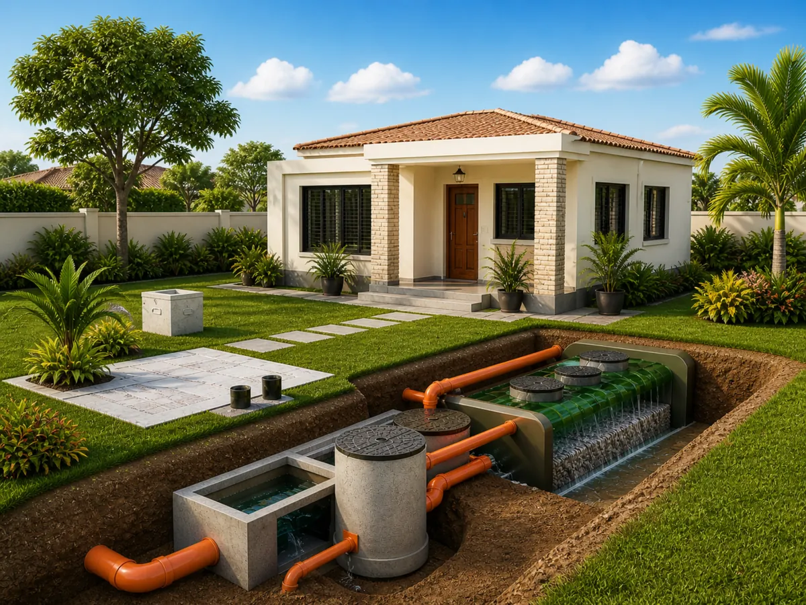
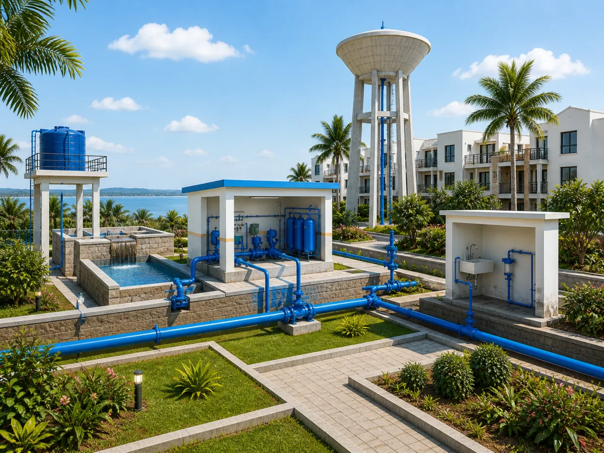
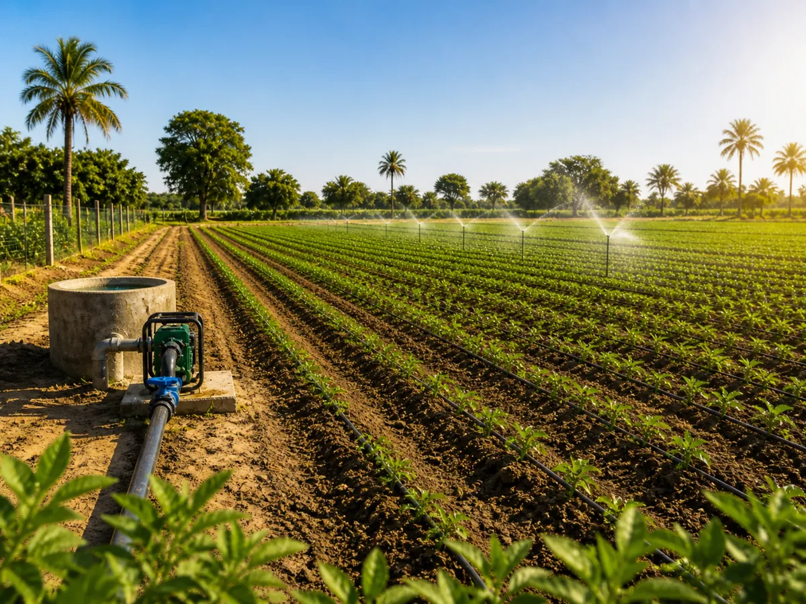
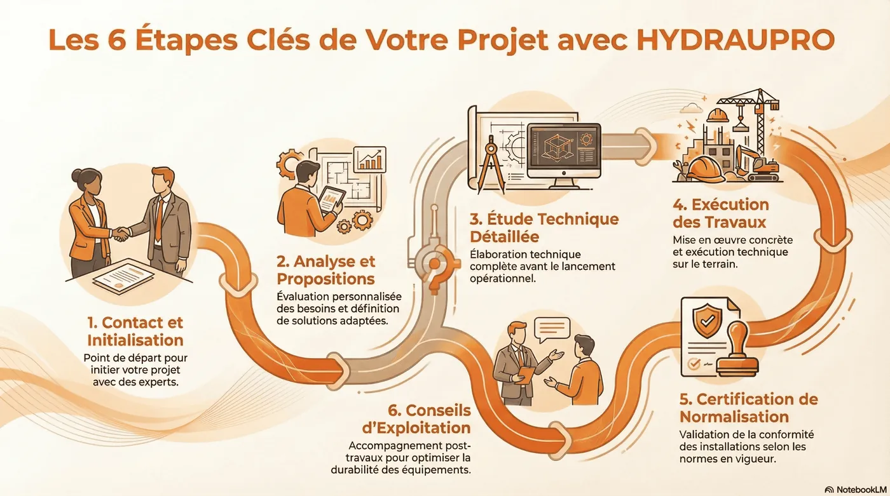

Assainissement autonome
Des solutions adaptées aux sites non raccordés au réseau collectif, avec une attention particulière portée à l’hygiène, à la durabilité et à la protection de l’environnement.
Découvrir la prestation
HYDRAUPRO accompagne les particuliers, professionnels, exploitants et porteurs de projets avec une approche technique claire, des choix cohérents et des solutions adaptées aux réalités du terrain au Sénégal.
Trois pôles d’expertise pour répondre aux besoins en assainissement, alimentation en eau potable et irrigation.

Des solutions adaptées aux sites non raccordés au réseau collectif, avec une attention particulière portée à l’hygiène, à la durabilité et à la protection de l’environnement.
Découvrir la prestation
Des systèmes conçus pour améliorer la pression, sécuriser le stockage et garantir une distribution plus fiable de l’eau potable.
Découvrir la prestation
Des solutions d’irrigation pensées pour optimiser l’usage de l’eau, soutenir les cultures et améliorer la performance des installations.
Découvrir la prestationBasée à M’Bour, l’équipe HYDRAUPRO développe une approche sérieuse des métiers de l’eau, de l’assainissement et de l’irrigation, avec un accompagnement progressif depuis l’analyse du besoin jusqu’à l’orientation technique du projet.
Parler de votre projet
Une présence humaine et professionnelle pour étudier les besoins, orienter les choix techniques et accompagner vos projets avec méthode.
Il accompagne les projets liés à l’assainissement, à la distribution d’eau et aux équipements techniques avec une approche rigoureuse et opérationnelle.
Il intervient dans l’analyse des besoins, la structuration des solutions et le suivi des projets pour apporter des réponses techniques cohérentes et adaptées au terrain.
Contactez-nous et nos équipes vous répondront dans les plus brefs délais.
Nous contacter